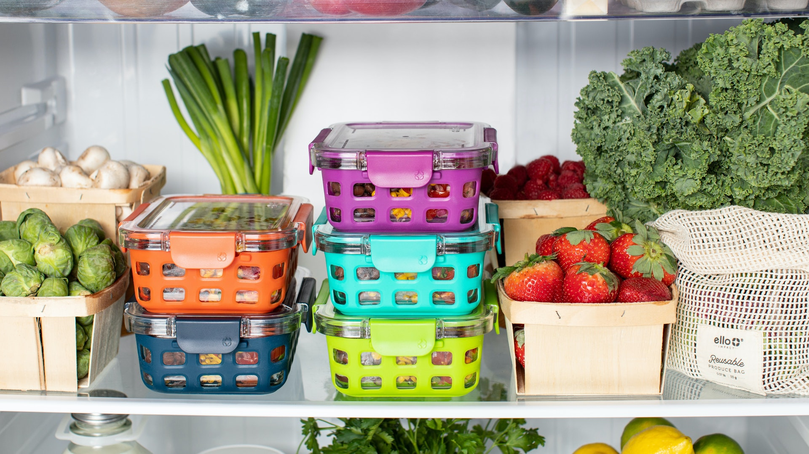

【香港01】 腸胃健康｜肚瀉想嘔吐如何緩解？拆解食物中毒7大原因、常見症狀
新聞常見食物中毒事件，大多是吃到不新鮮的海產或食物所致；但究竟怎麼樣才算食物中毒？只要吃壞肚子就是食物中毒嗎？食物中毒又該如何緩解？
2022-11-21

【香港01】 2種人易陷猝死危機吃10食物預防！心因性休克無關年紀
與心肌梗塞最息息相關的，就是高膽固醇、高血壓等特徵，而這些都是由平時飲食習慣所累積而成。不過，很多人健康檢查報告出來時，發現自己「出現紅字」都不太理會，但這個隱形殺手不痛不癢，尤其這些都是很重要的訊息。
2022-11-20
【明報】 第五波疫情下36%港人體重增一成 BMI愈高增磅比率愈多
香港肥胖學會訪問逾500名市民發現，第五波疫情下有36%受訪者體重較2019年底增加一成。而自稱曾減肥的受訪者中，約半數稱體重很快反彈，平均每人反彈4次。
2022-06-21